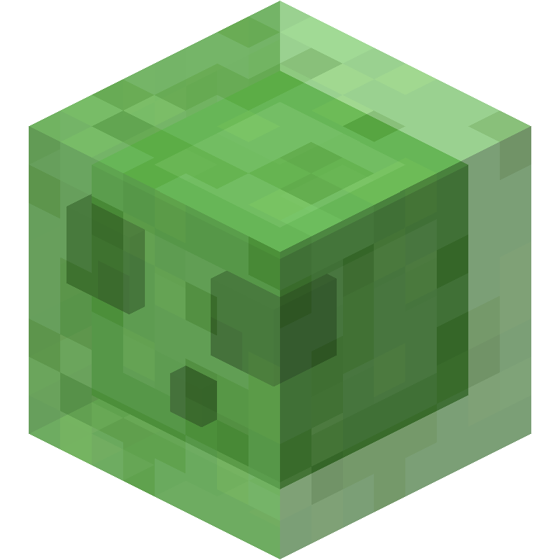
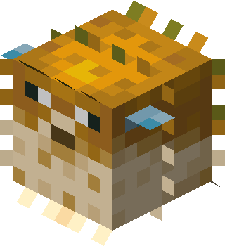
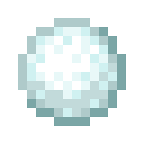
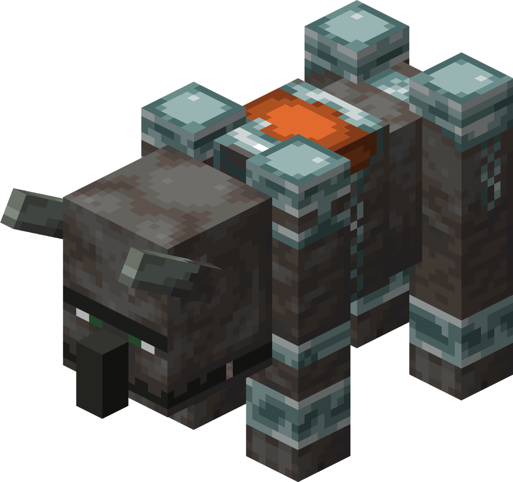
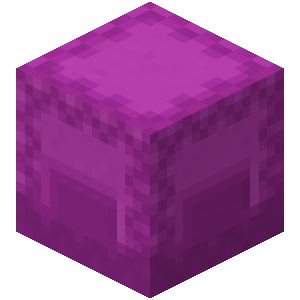

Special Block
擬態科学が生み出した特殊なモブや生物の一覧。
巨大スライム
ShockWaverが召喚する爆風を放つスライム
基本的に全てを吹き飛ばす、強力なスライム。
接触したプレイヤーに超強力な鈍足効果を付与する。
隕石と貫通槍に対しては効力を発揮しない。
巨大マグマキューブ

Hazeが召喚するデバフ特攻のマグマキューブ
接触したプレイヤーに鈍足付与と効果破壊などを行う。
当たり判定を持たないため、中に入れる。
何かを手に持っているとき、占有しているHazeに姿が表示されなくなる。
罠のエンダーマイト

Trapperが召喚する大きな当たり判定を持った罠
粘着質であるため、地形破壊以外では動かない。
広範囲な当たり判定を持ち、近づくプレイヤーを封じ込める。
占有しているTrapperにしか可視化されない。
皮膚呼吸のフグ
Spearが召喚する地上型のフグ
地上で元気に跳ね、鎧を好んで食べるフグ。
占有しているSpearに触れると再び腰回りで回る。
ふわふわな雪玉
Yetiが投げる大きな当たり判定を持った雪玉
かなり大きな判定を持ち、速度が速い。
接触したプレイヤーをその場にとどめる。
ラヴェジャー
Riderが操作する獰猛な生物
高速で動き、衝突したプレイヤーに盲目とノックバックを与える。
当たり判定がRiderとリンクしてしまう。
透視者ヴェックス

Xrayが召喚する広範囲透視化のコア
着弾地点の半径7ブロックの範囲を占有しているXrayにのみ完全に透視させる。
着弾した時点で効力が得られるため、吹き飛ばされても意味はないが、衝突前に吹き飛ばされると困る。
シュレディンガーのシュルカー
Chorusが召喚する転移先になるシュルカー
手招きされた全てのChorusに反応し、命を交換に座標を渡す。